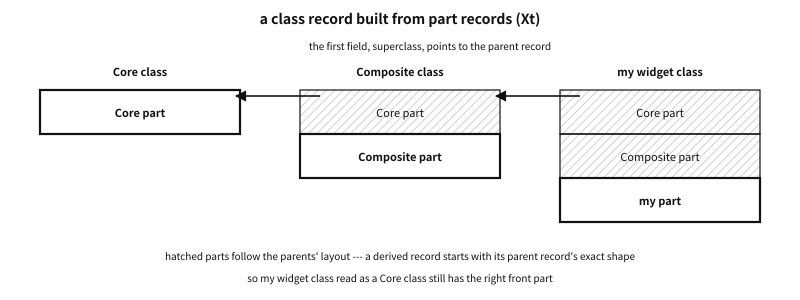

74 Objects built in C — systems and papers
What to know first
Looking back
In the last four chapters we built function-pointer tables, joined inheritance, looked up tables at run time and measured what it costs. Did this book think of these things first?
A. No. Almost all of them were built decades ago by someone, in C or on top of C. Objective-C began as a preprocessor that attached messages to C; the X Window widgets used class records that initialise the parent first back in the 1980s; and SQLite has lasted nearly twenty years with a table that carries a version number. And there are papers that measured the cost. This chapter tours them — not how to use them, but what they thought.
The need for this chapter, and its context
By the end of this chapter
The questions this chapter answers
- Which is better — a translator that emits C, or an imitation written in C?
74.1 People who put a language on top of C#
Imitating objects in C, everyone thinks at least once: “if only a machine would write this repetition for me”. Some people pushed that thought all the way. The results split in two — those that stayed translators that emit C, and those that became a different language in the end.
- Cfront. When Bjarne Stroustrup began “C with Classes” in 1979, he first built a preprocessor that turned it into C. Cfront, which followed, translated C++ into C, and first went outside in 1985 (1.0, that October, was the first commercial release).1 C++‘s virtual function tables were at first translated into C structs and function pointers — what this part builds by hand, the translator built instead.
- Cox’s preprocessor (OOPC). At ITT, Brad Cox built a preprocessor that attached Smalltalk’s messages to C. His 1983 article in SIGPLAN Notices described it as “a language and a run-time library for producing C programs that follow Smalltalk-80 run-time conventions”.2 It became Objective-C (next section).
- Schreiner’s ooc. Axel-Tobias Schreiner’s 1993 book Object-Oriented Programming with ANSI-C builds, in ANSI C, a description struct kept once per class (this part’s table), calls that choose the function at run time, and single inheritance. The code that must be written the same way every time (boilerplate) is written instead by
ooc, a small preprocessor made withawk. Its purpose was teaching — learning object orientation without learning a new language. It is a book that does what this part does, and is still worth reading. - Vala. GNOME’s Vala turns a C#-like syntax into C that uses GObject. The translated C can be shipped as it is, so there is no separate run-time library, and from the C side it looks like an ordinary GObject library.3 It is the road on which a machine writes GObject’s boilerplate (below) for you.
Q. Which is better — a translator that emits C, or an imitation written in C?
A. A translator removes repetition, and turns places where people would slip into checks by a compiler. In exchange there is one more tool, error messages and the debugger point at translated C, and the whole team has to learn the language. Chapter 75′s warning “do not make a class-declaration language out of macros” is aimed at translators half built out of macros. If you mean to finish it, build a real translator like Cfront or Vala; if not, stay with an imitation that reads as C.
74.2 A little Objective-C#
Objective-C was refined at the company Cox and Tom Love founded (Productivity Products International, later Stepstone). In 1988 NeXT licensed it as the language of NEXTSTEP, and through NeXT it was used for decades in Apple’s macOS and iOS. Features such as categories and protocols were added in the NeXT years.4
Seen with the eyes of this part, Objective-C is C with one thing added. It takes C code as it is and puts Smalltalk’s message sending on top.
@interface Shape
- (double)area; /* a method declaration */
@end
@interface Circle : Shape /* inheritance */
@end
@interface Circle (Describing) /* a category: adds methods to an existing class */
- (void)describe;
@end
double total(Shape *s) { return [s area]; } /* sending a message */It is not much of an exaggeration to say that the last line’s [s area] is the whole language. The compiler turns that expression into a call to a run-time function. In Apple’s run-time it is objc_msgSend(s, @selector(area)) — given the receiver and the selector, that function finds the method and jumps to it. The way it finds it is chapter 72′s lookup.c exactly. It gets the class from the isa at the head of the object, looks in that class’s (selector → function) cache first, and if not there scans the method lists, climbs to the parent, puts what it found in the cache, and if nothing is found at all hands over to message forwarding.5
The same syntax becomes a different C call depending on the run-time. On this machine (x86-64 Linux), Clang 19.1 targets by default the GNU run-time that GCC uses, and emitted the total above in two steps: get the function with objc_msg_lookup(s, sel), then jump to it. With -fobjc-runtime=gnustep-2.0 or -fobjc-runtime=macosx-10.15 it emitted a single objc_msgSend. The difference is whether lookup and call are tied into one function or kept apart — either way, a message is one C function call.
What this language leaves for C is three things.
- Messages are the default. A method call is always a lookup at run time. So adding methods without recompiling a class (categories) and passing unknown messages to another object are basic features of the language. It is the opposite end from C++, which uses static tables — tables whose contents are fixed at compile time.
- It cut the cost of lookup with caches. The per-class cache ends most lookups with one hash — the method measured as the
selector, class cacherow in chapter 73. - It uses the same compiler as C. In GCC and Clang, the C compiler takes Objective-C as well. This book’s C is C23, and when and how far Objective-C takes in new editions of C differs by compiler — we say no more than “it takes C code”.
74.3 Class records of the 1980s — the X Toolkit Intrinsics#
The X Window System’s X Toolkit Intrinsics (Xt) is an object system for widgets built in C. Settled at the end of the 1980s, it already had almost every piece of this part.6
- One class record per widget class — our table. Its first field is
superclass, pointing to the parent’s class record. - A class record is a struct made of part records joined one after another. A widget has the common part (Core), Composite below it and its own part below that — chapter 71′s “derived table that embeds the base table”, several layers deep.
- Initialisation is of two kinds.
class_initializeis called once for that class, without chaining.class_part_initializeis called in a chain — from the topmost ancestor down to itself. So a derived class touches its own part after the parent has filled everything in. - Before the first instance is made, a
class_initedflag checks whether the class has been initialised — lazy building.

Figure 74.1 — Xt’s class records. A derived record starts with its parent record’s exact shape.
Parent first, then self — the order of “fill” among chapter 72′s five steps was written into a standard document by this system in the 1980s.
74.4 GObject — the largest model case#
GLib’s GObject is the largest and longest-used object system built in C. Countless GTK and GNOME programs stand on it, and the same objects are called from other languages such as Python, JavaScript and Rust. Chapter 68 showed its bones; here we look at what it got right and in what order it builds its tables.7
| Structure | How GObject does it |
|---|---|
| State kept apart from the table | every instance struct has a GTypeInstance as its first member, whose first bytes point to the class structure. The class structure (our table) exists once per kind |
| Inheriting the table | the class structure is made once, when the first instance of the kind is created, and starts as a copy of the parent’s class structure. A derived kind overrides only the slots it changes |
| Inheriting the state | the first member of a derived instance is the parent instance |
| Construction | one g_object_new makes every kind. The reference count starts at 1 |
| Lifetime | g_object_ref and g_object_unref. When the count reaches 0, dispose and then finalize |
| Casts | checking cast macros such as VIEWER_FILE(obj) (a warning when wrong) and kind-check macros such as VIEWER_IS_FILE(obj) |
| Boilerplate | G_DECLARE_FINAL_TYPE declares the cast and kind-check macros, and G_DEFINE_TYPE makes the …_get_type function and the parent-class pointer |
Table 74.1 — The structure of GObject
What it got right matches this part’s principles.
- Structure keeps the conventions. Casts go through macros that check the kind at run time. A wrong cast leaves an “invalid cast from … to …” warning — though the pointer is returned as it was, so nothing stops. And in today’s GLib source the check becomes a plain cast when
G_DISABLE_CAST_CHECKSor__OPTIMIZE__is defined, that is, in an optimised build. The check is a net for test builds, not a defence for release builds. - Boilerplate is not written by hand. Two macros make the repetitive code that defines a kind. Fewer places for people to make mistakes by hand.
- Release is split into two stages.
disposelets go of what it holds of others, andfinalizedestroys its own memory. Even when two objects hold each other and form a cycle,disposecan break it. The documentation saysdisposecan be run more than once — so the convention is to write it to be safe when called twice. - There is a run-time type system. Every kind is registered with a name and a number, and the bindings of other languages read that information to handle the same objects.
The costs are plain too. Dozens of lines of boilerplate per kind, the cost of a run-time type system, and time to learn it. And GObject is for places that really need a large object system — hundreds of widget kinds, bindings to many languages, decades of compatibility. Copy GObject’s shape into a small library and you copy only its costs. What to learn from it is the principles.
74.4.1 The order in which the table is built#
GObject’s class structure is a dynamic table in the sense of chapter 72. The type system builds it when the type is first used. The order is this.8
- Build the parent’s class structure first (if that is also its first time).
- Copy the parent’s class structure into the front of the new class structure. Slots not overridden are therefore the parent’s.
- Call the
base_initfunctions the ancestors registered, from the topmost ancestor down. - Call this type’s
class_init. Here the derived type overrides only the slots it changes, fills new slots, and registers properties and signals.
It is the same order as what chapter 72′s build_table.c did — build the parent first, copy, override your own slots. The difference is verification and sealing. The type system does not check for empty slots — whether to fill a slot is up to each class_init — and it does not make a finished class structure read-only.
74.5 Python’s type objects — CPython#
Every CPython object keeps a reference count and a type pointer at its head (PyObject’s ob_refcnt and ob_type). The PyTypeObject that type pointer points to is a table with dozens of slots whose names start with tp_ — hashing, comparison, conversion to a string, attribute lookup, calling. To build a new type in C, you fill only the slots that change, leave the rest NULL and call PyType_Ready. That function then inherits and fills the empty slots from the parent type (tp_base).9
This filling by PyType_Ready is one more answer to chapter 70′s “empty slots”. Instead of making every caller check a NULL slot, they are filled from the parent at the one place where the type is built — a bundle of defaults applied at run time.
74.6 Tables in kernels — Linux and FreeBSD#
The Linux kernel is one of the largest object systems built in C. Every file system, device and network protocol has tables of function pointers (file_operations, inode_operations, net_device_ops). In two articles for LWN in 2011, Neil Brown laid out its patterns — tables holding only function pointers as the norm, the table pointer in the object, and container_of to get back the outer object from an embedded base.10 Chapter 70′s “pure tables” and “empty slots” also lean on those articles.
FreeBSD’s kobj(9) took another road. A class hands out a list of (method label, function) pairs. When the class is first used, the kernel turns that list into a form that is quick to search — the manual calls this “compiling” the class. The manual says the dispatch after that is “only slightly more expensive than a direct function call” — their words, not something this book measured.11 It looks methods up by label, but does the preparation all at once the first time — a place between selector lookup and a static table.
74.7 COM from C#
Microsoft’s COM is a language-independent object convention. The only way to an object is through interfaces, and an interface is a table of function pointers. Seen from C, every COM object is a struct whose first member is a table pointer (lpVtbl), and the first three slots of every table are always QueryInterface, AddRef and Release.12
/* calling a COM object from C (the C flavour of the Windows headers) */
hr = obj->lpVtbl->QueryInterface(obj, &IID_IStream, (void **)&stream);
stream->lpVtbl->Release(stream);Two things in this convention are worth noticing.
- It ties the table and the lifetime into one contract. The first slots of every table are the reference count (
AddRef,Release). Whatever has a table knows how to manage its lifetime — chapter 71′s lifetime conventions enforced by the shape of the table. - An interface, once published, never changes. New features come as a new interface (a new IID), and the caller asks with
QueryInterfacewhether it is there. Instead of adding slots at the end, versions are managed by one more table (“Several interfaces, and finding them” in chapter 72).
74.8 Tables that survive new versions — SQLite and OpenSSL#
SQLite routes everything it does with the operating system through a table called the VFS (sqlite3_vfs). The table’s first slot is a version number, iVersion, and the documentation says “new fields may be appended in future versions, and iVersion will increment whenever this happens”. iVersion became 1 in SQLite 3.5.0, 2 in 3.7.0 and 3 in 3.7.6. SQLite calls xCurrentTimeInt64, added in version 2, “only if iVersion is 2 or greater and the slot is not NULL” — it reads only what it knows and otherwise takes the old road.13
Written out from the caller’s side, it looks like this — not SQLite’s code, but the same rule rewritten for this book.
struct vfs {
int version; /* rises per new slot */
int (*current_time)(struct vfs *, double *); /* version 1: days */
int (*current_time_ms)(struct vfs *, long long *); /* version 2 */
};
long long now_ms(struct vfs *v)
{
long long ms;
if (v->version >= 2 && v->current_time_ms && v->current_time_ms(v, &ms) == 0)
return ms; /* knows the new slot */
double days = 0;
v->current_time(v, &days); /* the old road */
return (long long)(days * 86400000.0);
}A version 1 table has no current_time_ms slot at all. So the version number is checked first, and the slot is read only in a version that has it.
The same documentation also records a time the rule was broken. It says that “due to an oversight” the struct changed in 3.6.0, yet iVersion did not go up. That means the version number alone cannot tell the struct’s shape before 3.6.0 from its shape after. A real program shows why chapter 71′s “write the size or version” must be a rule — break it once and that number can never again be fully trusted.
OpenSSL 3 solved the version problem differently. A provider hands out its functions as an array of OSSL_DISPATCH — (function number, function pointer) pairs. The receiver skips numbers it does not know. So a provider built for one version of OpenSSL works with others too. There are no slot positions, so the rule “add only at the end” is not needed. The cost is a lookup — the array is scanned to match numbers before use. The array’s end marker was a pair of number 0 and NULL in the 3.0 documentation, and from the 3.3 documentation on is written with the OSSL_DISPATCH_END macro.14
74.9 Other ideas — libraries and experiments#
This part followed the shape “one table, one object”. Some attempts went outside it. We look at them not for whether they are usable but for what they tried.
- COS (C Object System). COS, built by Laurent Deniau at CERN, builds the ideas of Common Lisp’s object system (CLOS) and of Objective-C with nothing but the C99 preprocessor. The most striking of them is the multi-method.15 A multi-method chooses a function not by one first argument but by the kinds of several arguments. “When a circle hits a rectangle” goes neither in the circle’s table nor the rectangle’s, but on the pair — in the table at the end of this section, each cell is one function. It is an idea found nowhere else in this part — it gives up the very assumption that a table belongs to an object.
- Piumarta and Warth’s open object model. Ian Piumarta and Alessandro Warth showed that three object types and five methods are enough to set up an extensible object model and message semantics.16 An appendix gives an implementation in GNU C, and the essential objects and methods come to 140 lines. The idea worth noticing is that the table is an object too — looking up a method is itself a message, so the way of looking up can be changed at run time. The same paper shows, with a single macro, an inline cache that remembers the last result at each call site — the idea measured in chapter 73.
- Cello. Daniel Holden’s Cello is a library that puts interfaces, constructors and destructors, exceptions, optional garbage collection and reflection (asking for a value’s type information while the program runs) on top of C. Its author calls it “a fun experiment to see what C looks like hacked to its limits”, and suggests trying it on a hobby project before any large product.17 Cello hides a header holding type information in the memory just before the place a pointer points to. Its author calls this a “fat pointer”, but what grew is not the pointer but the memory in front of it — the pointer stays its ordinary size. It shares only the name with chapter 72′s fat pointer (two pointers); the shape is the opposite.18
Rows a, columns b | circle | rectangle |
|---|---|---|
| circle | hit_circle_circle | hit_circle_rect |
| rectangle | hit_rect_circle | hit_rect_rect |
Table 74.2 — A multi-method — choosing a function by the kinds of two arguments
With dispatch through one table per object, hit(a, b) chooses by a’s table alone, and b’s kind has to be sorted out again with a switch inside that function. A multi-method looks at both kinds at once and finds the cell.
74.10 Papers that measured dispatch#
Chapter 73′s measurement belongs to this one machine. There are papers that asked the same question earlier and more widely. Their numbers belong to their machines and their years, so they are not repeated; only what they asked is noted.
- Deutsch and Schiffman, POPL 1984. Implementing Smalltalk-80 fast, they introduced the inline cache — from the observation that a call site’s receiver is often of the same class as last time.
- Hölzle, Chambers and Ungar, ECOOP 1991. The polymorphic inline cache, which remembers several classes at one site. The paper also proposed adaptive compilation, which uses the record of kinds gathered in that cache when recompiling a method.
- Driesen and Hölzle, OOPSLA 1996. “The Direct Cost of Virtual Function Calls in C++”.19 They measured the cost of going through the table by comparing real C++ programs with imagined versions in which every virtual call became a direct call, and asked with a processor simulator which properties of the processor govern that cost. They deliberately left out indirect costs such as cache effects — stating what was not measured is this paper’s virtue.
- Zendra, Colnet and Collin, OOPSLA 1997. “Efficient Dynamic Dispatch without Virtual Function Tables: The SmallEiffel Compiler”.20 An Eiffel compiler that emits C used type inference to narrow the kinds possible at each call site, and emitted binary branch code that splits on the kind number instead of a table. The
binary branchesrow of chapter 73 is this idea — note too that on this machine it was the worst with mixed kinds. A different machine and year give a different answer.
74.11 Ideas worth noticing in these systems, in one table#
| Idea | Where it appeared (this chapter) | Its place in this part |
|---|---|---|
Separate the table from the object, and make it const | kernel tables, Xt’s class records | chapter 70′s three parts |
| Fill empty slots where the table is built | CPython’s PyType_Ready, the kernel’s bundles of defaults | chapter 70′s empty slots |
| A derived table that embeds the base table | Xt’s part records, GObject’s class structures | chapter 71′s inheritance |
| Parent first, then self | Xt’s class_part_initialize, GObject’s class_init | chapter 72′s five steps |
| Table and lifetime in one contract | COM’s IUnknown | chapter 71′s lifetime |
| A table with a version number | SQLite’s iVersion (and 3.6.0, which broke it) | chapter 71′s size fields |
| Slots matched by number | OpenSSL 3′s OSSL_DISPATCH | chapter 72′s tables whose versions change |
| Asking for an interface separately | COM’s QueryInterface, GObject’s interfaces | chapter 72′s several interfaces |
| Look up by name, and cache | Objective-C’s objc_msgSend | chapter 72′s selectors |
| Harden into a table the first time | the class compilation of FreeBSD’s kobj | chapter 72′s itab |
| A cache at the call site | Deutsch and Schiffman; Hölzle and colleagues | chapter 73′s inline caches |
| Dispatch without a table | Zendra and colleagues’ SmallEiffel | chapter 73′s binary branches |
| Choosing by several arguments | COS’s multi-methods | — (an idea outside this part) |
| The table is an object too | Piumarta and Warth | — (an idea outside this part) |
Table 74.3 — The ideas of this part, and where they first appeared
74.12 Summary#
| Topic | The point |
|---|---|
| Languages on top of C | Cfront turned C++ into C, Cox’s preprocessor Smalltalk’s messages into C (it became Objective-C), Vala a C#-like syntax into GObject C. A machine writes the repetition — build it all the way, or not at all |
| Objective-C | C with one thing added: sending messages. [s area] is a call to the run-time (objc_msgSend or objc_msg_lookup); the per-class cache cuts the cost of lookup |
| Xt | class records of the 1980s: superclass, part records, initialisation once and in a chain |
| GObject | conventions kept by macros and run-time checks. The class structure is a dynamic table that copies the parent and overrides |
| CPython | PyType_Ready fills NULL slots from the parent |
| Kernels | Linux: pure tables and container_of. FreeBSD kobj: the method list turned into a quick-to-search form on first use |
| COM | the first slots of every table manage lifetime (reference counts). Instead of changing an interface, add another |
| SQLite and OpenSSL | a versioned table and the record of breaking it; slots matched by number |
| Experiments and papers | multi-methods, the table as an object. Inline caches, PICs, the direct cost of virtual calls, dispatch without tables — the numbers are their machines’ |
Table 74.4 — Objects built in C — one line each
Having toured what others built, one question remains — when to stop. The last chapter measures the limits of macros, of principles and of object orientation itself, and closes this part by returning to the first idea.
Notes
- Computer History Museum, “C++ Historical Sources Archive” (softwarepreservation.computerhistory.org/c_plus_plus). ↩
- B. J. Cox, “The Object Oriented Pre-Compiler: Programming Smalltalk 80 Methods in C Language”, SIGPLAN Notices 18(1):15–22, 1983. ↩
- GNOME Wiki, “Projects/Vala/About”. ↩
- B. J. Cox, S. Naroff, H. Hsu, “The Origins of Objective-C at PPI/Stepstone and Its Evolution at NeXT”, HOPL IV, Proc. ACM Program. Lang. 4(HOPL), 2020. ↩
- Apple, “Objective-C Runtime Programming Guide”, “Messaging”. For the machine-code details of probing the cache, M. Ash, “Friday Q&A 2017-06-30: Dissecting objc_msgSend on ARM64”. ↩
- X Consortium, “X Toolkit Intrinsics — C Language Interface” (X11R7.7 edition), the chapter “Widget Classes”. ↩
- GObject documentation, “Type system concepts” (docs.gtk.org/gobject/concepts.html). ↩
- GObject documentation, “Type system concepts”, “Instantiatable classed types: objects”. ↩
- Python documentation, “Type Object Structures” (c-api/typeobj). A table gives the inheritance rule for each slot — it differs by version. ↩
- N. Brown, “Object-oriented design patterns in the kernel”, parts 1 and 2, LWN.net, 2011-06. ↩
- FreeBSD,
kobj(9). The device driver framework newbus stands on it. ↩ - Microsoft Learn, “COM Objects and Interfaces”, “The IUnknown Interface”. ↩
- SQLite, “OS Interface Object” (c3ref/vfs.html). ↩
- OpenSSL documentation,
OSSL_DISPATCH(3), 3.0 and 3.3 editions. ↩ - L. Deniau, “The C Object System: Using C as a High-Level Object-Oriented Language”, arXiv:1003.2547, 2010. ↩
- I. Piumarta, A. Warth, “Open, Extensible Object Models”, Self-Sustaining Systems (S3 2008), 2008. The line count was checked in the text of the edition VPRI published (objmodel2.pdf). ↩
- D. Holden, Cello, the introduction (libcello.org) and the repository’s README. ↩
- D. Holden, “A Fat Pointer Library” (libcello.org/learn). ↩
- K. Driesen, U. Hölzle, OOPSLA 1996, 306–323. ↩
- O. Zendra, D. Colnet, S. Collin, OOPSLA 1997, 125–141. ↩